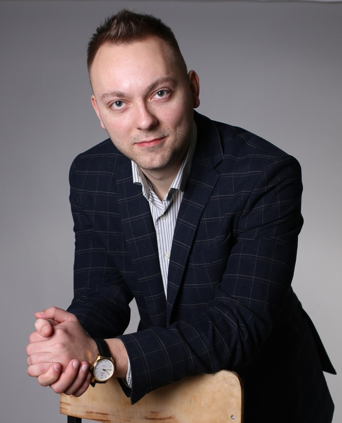

CURRICULUM VITAE

ОГОРОДНИКОВ
АЛЕКСАНДР АЛЕКСАНДРОВИЧ
Facebook
|
Gmail
Номер телефона: +375336126719
Навыки программирования:
HTML
CSS
JavaScript
Языки:
- английский (B1)
- польский (B1)
- русский и белорусский (native)
Опыт работы:
- С 2016 года на различных должностях профессорско-преподавательского состава.
- Опыт руководства и преподавания на английском языке у иностранных
англо- и франкоговорящих студентов (более 5 лет).
- Автор более 30 научных публикаций и 2 монографий в сфере социально-экономического развития.
| I |
II |
III |
| 2016 - 2017 |
2017 - 2018 |
2019 - по наст. время |
| преподаватель |
ст. преподаватель |
доцент кафедры |
Образование:
Кандидат исторических наук (2018), доцент (2020)
- В 2014 году окончил с отличием Полоцкий государственный университет по специальности «История», в том же году по специальности «Правоведение» присвоена квалификация юриста.
- В 2014-2015 годах обучался в магистратуре Полоцкого государственного университета, присвоена степень магистра.
- В 2015-2018 годах обучался в аспирантуре Витебского государственного университета им. П. М. Машерова, присвоено звание исследователя.
- В 2016-2019 годах обучался в Академии управления при Президенте Республики Беларусь по специальности «Государственное управление и право», присвоена квалификация юриста.